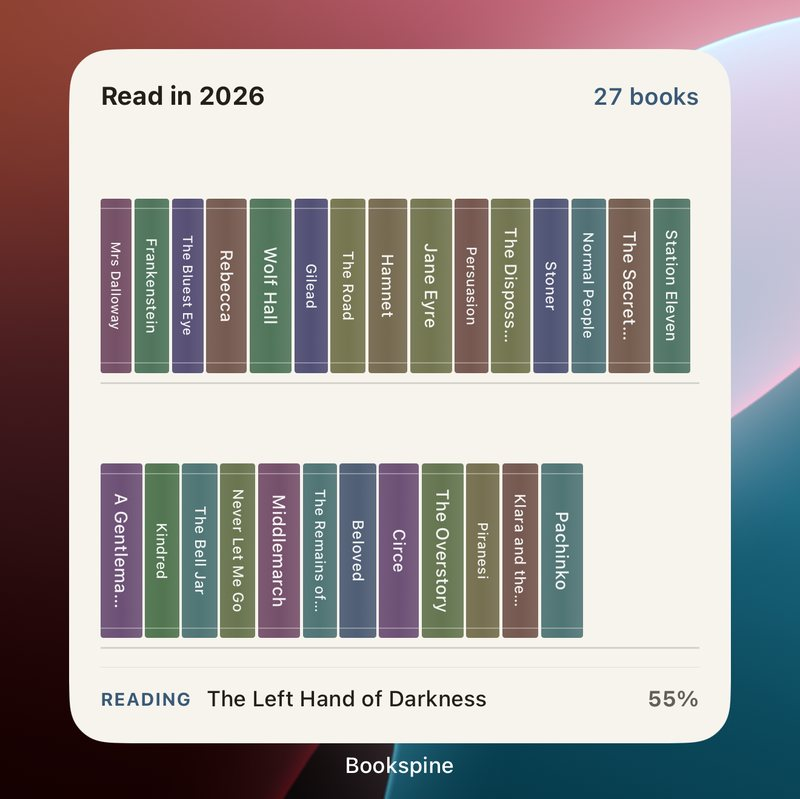
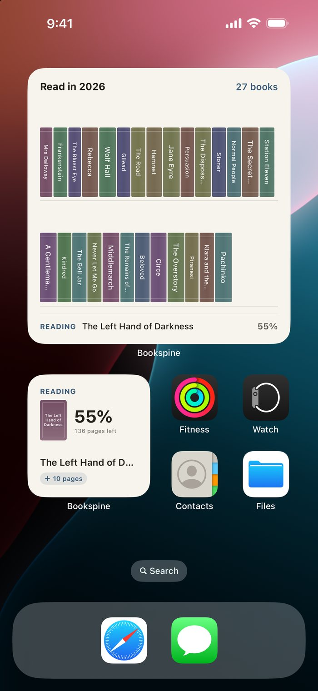
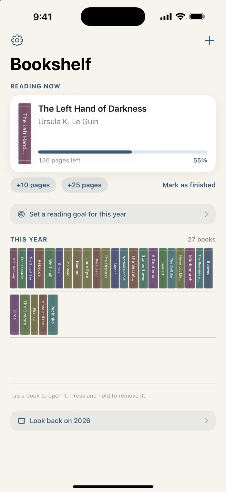
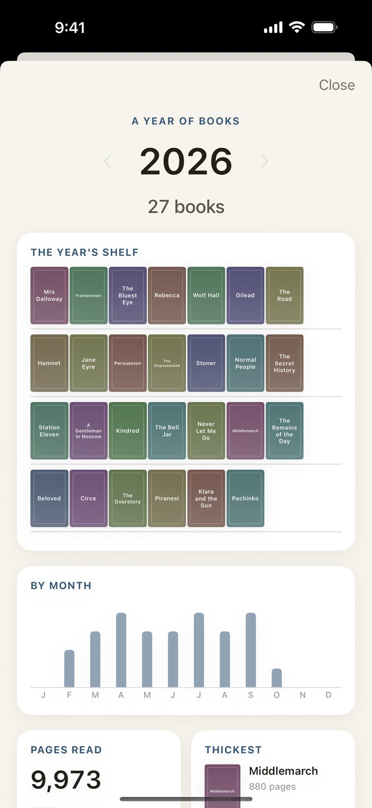

Add a book, and your current read — its cover or spine, and how far you are — sits on the Home Screen. Tap the widget to add pages without opening the app.
This year's shelf in a Large widget with Pro, $7.99 — one-time purchase

Most reading apps keep the widget behind a subscription. Here the widget is the point, so the Small one is free, and the number of books is never limited.
The Small widget is free: the book you're reading, its cover or spine, and how far you are. Tap it to add pages without opening the app.
Books you finish line up on a shelf, oldest to newest. Books without a cover are drawn as a spine — a colour and the title — so the shelf never has grey holes in it.

Pro: books per month, pages read, your thickest book and the year's shelf.

No ads. No account.
One-time purchase, not a subscription.
Book data comes from Open Library.
No subscription, no ads, no account.